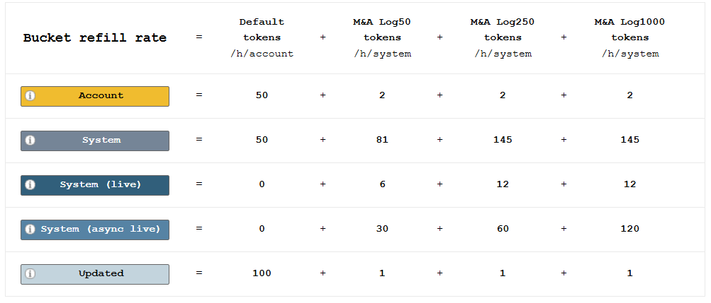
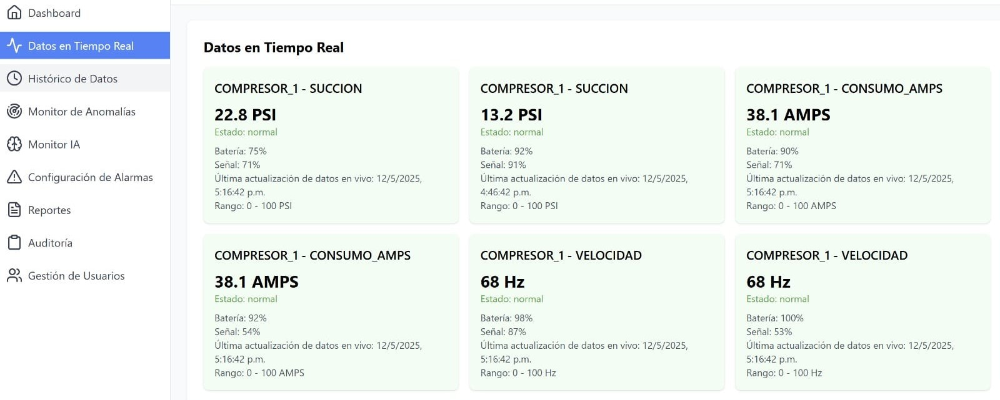
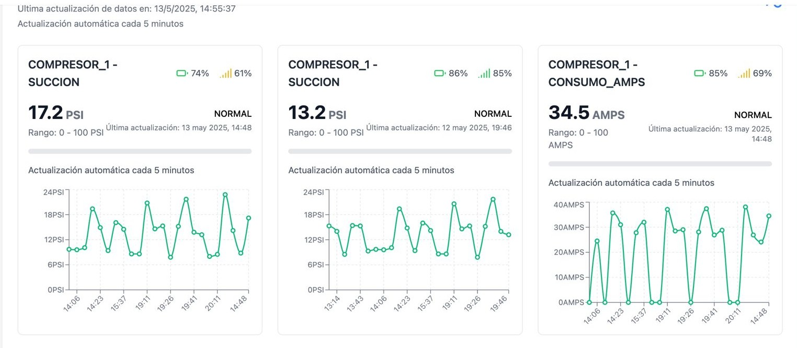

Monitoreo IoT Farmacéutico
Sistema de monitoreo en tiempo real para el control de condiciones ambientales en la industria farmacéutica

Descripción del Proyecto
Solución integral de monitoreo en tiempo real para la industria farmacéutica que garantiza el cumplimiento de normativas de almacenamiento mediante el análisis predictivo y la detección temprana de anomalías en las condiciones ambientales de almacenes de medicamentos.
Hallazgos Clave
99.2%
Precisión en detección de anomalías
⭐ Características Principales
- Monitoreo en tiempo real 24/7
- Alertas tempranas
- Análisis predictivo
- Reportes automatizados
45%
Reducción en pérdidas
🏆 Beneficios Clave
- Cumplimiento normativo
- Reducción de mermas
- Optimización de recursos
- Toma de decisiones basada en datos
Metodología
1. Recolección
- Sensores IoT en tiempo real
- API para integración con sistemas existentes
- Almacenamiento seguro de datos
- Validación de calidad de datos
2. Procesamiento
- Limpieza y normalización
- Agregación de datos
- Cálculo de métricas
- Almacenamiento en base de datos
3. Análisis
- Modelo Isolation Forest
- Detección de patrones
- Predicción de tendencias
- Generación de alertas
4. Visualización
- Dashboard interactivo
- Gráficos en tiempo real
- Reportes personalizables
- Alertas visuales
Stack Tecnológico
⚛️ Frontend
- React 19
- TypeScript
- Redux Toolkit
- Material-UI
- Leaflet
⚙️ Backend
- Python 3.10+
- FastAPI
- PostgreSQL
- Redis
- Celery
🧠 Machine Learning
- Scikit-learn
- Pandas
- NumPy
- MLflow
- Prometeo/Grafana
Visualizaciones



Resultados e Impacto
Disponibilidad y Escala
Sistema en producción con 99.2% de uptime, monitoreando 150+ sensores y procesando 6,000+ lecturas diarias.
Precisión del Modelo
El modelo de Machine Learning alcanzó una precisión del 92% en la detección de anomalías.
Reducción de Falsos Positivos
40% en comparación con el sistema de alertas basado en umbrales anterior.
Optimización de Rendimiento
80% en llamadas a APIs externas gracias a una capa de caché estratégica.